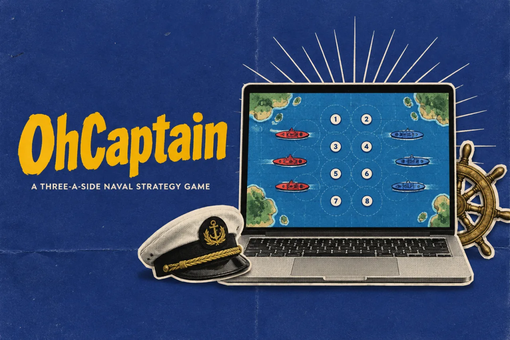
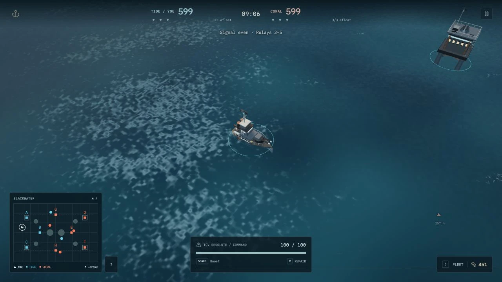
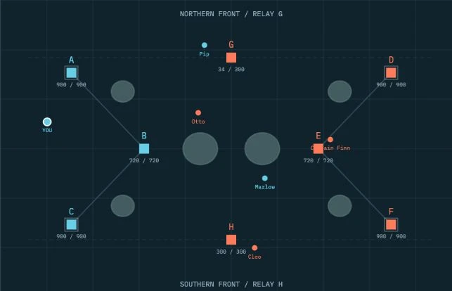

OhCaptainProduct story · 6 min read
Sail your ship. Coordinate the fleet.
A 3-v-3 naval game exploring shared command, role-specific decisions and a combat interface that keeps the sea in view.
Read the case study

Actual local gameplay with an AI-filled crew: compact battle status, a persistent map, the Fleet control and the player’s hull.
View full size ↗01 The problem
What needs to stay visible when sailing, fighting and command happen together?
In OhCaptain, sailing and firing are only part of the job. Each crew shares supplies, but its captain decides how to spend them. Operators need to request help while both roles keep track of a changing battle. I framed the interface around the next decision a player can actually make.
Designed for Player joining a small naval crew. Know who can act, what is urgent and where the next objective is.
User context Design assumption
Learning a captain or operator role while coordinating around a finite relay-control match.
- The friction
- Combat, spending requests and tactical detail can overwhelm the same screen.
- Design implication
- Preserve immediate awareness and reveal deliberate command detail when requested.
Example situation · illustrative scenario. Imagine taking damage while an operator asks for repairs and an enemy crew captures a relay. The captain must decide where shared supplies go while still steering a ship.
02 The outcome
One arena, three layers of information.
I separated immediate battle awareness, fleet spending and tactical inspection across the combat view, Fleet drawer and overview. The prototype supports solo AI-filled matches and crew rooms in one capture-and-hold arena. The captures here show the actual game; the illustrated harbor is menu artwork.

More about the experience
- Keyboard and mouse. The playable prototype is designed around desktop sailing, aiming and command controls.
- Peer-to-peer scope. Rooms rely on a host and direct peer connections; solo AI-filled play remains a separate path.
03 The direction
Give each information layer a place
Information needs a place and a priority. An urgent hull warning, a spending decision and a full fleet overview should not demand attention in the same way.
Playable prototype and documented Clear Deck revision · solo captures
My direction. I separated immediate combat awareness, role-specific fleet controls and deliberate tactical inspection.
Process and product scope
I separated the crew journey into choosing a station, entering solo play or assembling a room, deploying, and managing the battle. A captain still sails and fights; the extra responsibility is distributing shared supplies. Operators request upgrades or repairs rather than spending the treasury themselves.
The documented Clear Deck revision gives combat a compact score/clock, fleet-alive counts, hull status and a persistent map. Spending moves into the Fleet drawer, while the expanded overview holds rosters, recent events and relay details. Warnings compete for a small number of attention slots instead of becoming a wall of banners.
I reviewed the local playable build, documentation and awareness rules. Solo play with AI fill and peer-to-peer rooms are distinct product paths. Online scope depends on a host keeping the page open; the prototype has no dedicated match service or host migration. Rule checks and seeded scenarios do not establish balance or usability with human crews.
- 3 v 3
- captain and two operators per crew
- 8
- capture-and-hold relays
- 10 min
- maximum match window
- Choose a station
Understand captain spending or operator requests.
- Deploy
Start with AI fill or assemble a crew through a room.
- Read the battle
Keep hull, fleet status and the relay map available.
- Coordinate
Open Fleet to spend or request; expand the overview to plan.
04 Design decisions
Keep combat clear and command within reach.
Open a decision to see the reasoning and trade-off.
01Make responsibility visible before deployment
Offer Captain and Vessel Operator as distinct stations. Captains distribute shared supplies through the Fleet drawer; operators use the same crew context to request an upgrade or repair.
Why this matters. A shared resource needs a clear decision owner. Role-specific actions let people understand why they can request something but cannot buy it directly.
The trade-off. The captain can become a bottleneck while also sailing and fighting. Pending requests need to remain discoverable without forcing a panel over combat.
02Keep essential battle state on the field
Keep the score, clock, relay balance, fleet-alive counts, hull and corner map available. Put spending in a drawer and detailed rosters, events and defenses in the expanded overview.
Why this matters. The map helps connect local action to the relay objective. Separating routine awareness from deliberate inspection leaves room to aim and navigate.
The trade-off. An overview can interrupt action. Solo overview pauses the match; online play continues, so players need to understand that distinction. The prototype targets keyboard and mouse rather than claiming a touch-control experience.
03Give urgent feedback a limited attention budget
Show at most one off-screen enemy bearing and reserve one text cue for critical hull, safe healing or an endangered home relay. Limit outgoing damage feedback to two numbers and keep routine radio outside combat.
Why this matters. An alert is useful only if it helps a player choose an action. A priority order makes a received hit or low hull easier to notice among effects, ships and objectives.
The trade-off. A quieter interface can hide context that an experienced player wants. The map and overview must provide a dependable route to that detail, and the priority policy needs human playtesting.
05 Reflection
A crew can coordinate when the next action has an owner.
I would put a new crew through requesting a repair, spending supplies and choosing a relay without coaching. Missed requests and time spent searching the overview would help me decide what to simplify next.
What I would evaluate next proposed work
- Proposed playtest: form two crews and ask players to explain their role, request or buy a repair, and identify the relay that matters next without coaching.
- invitation and room entry, role reassignment, a guest disconnecting, restrictive peer-to-peer networks, and an honest explanation when a host leaves.
- Proposed observations: missed requests, map-to-world confusion, unnoticed critical alerts and time spent in the overview. Compare these before changing the attention policy.
Keep the action close to the pointer.